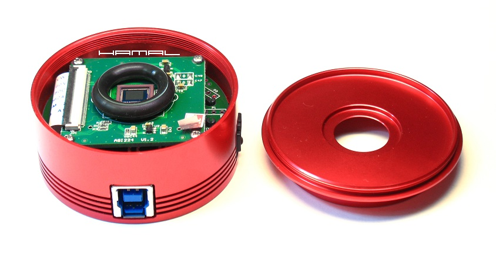
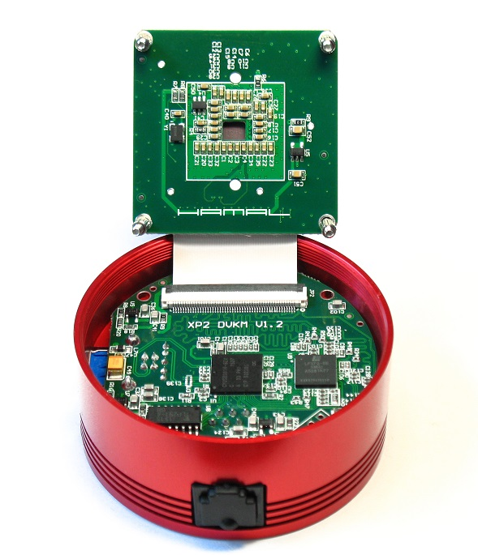
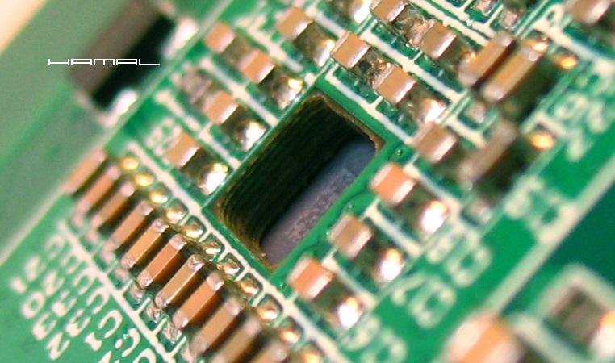
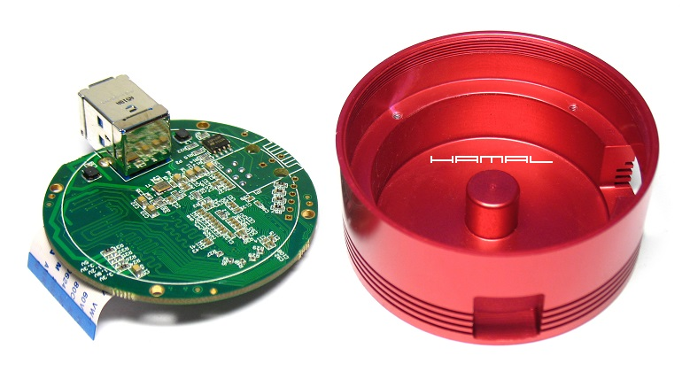
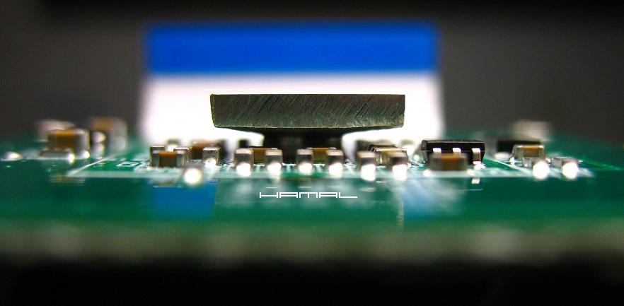
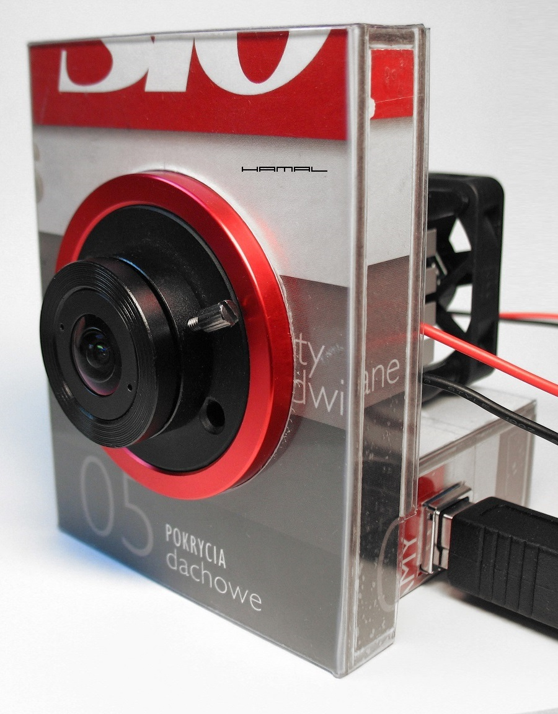
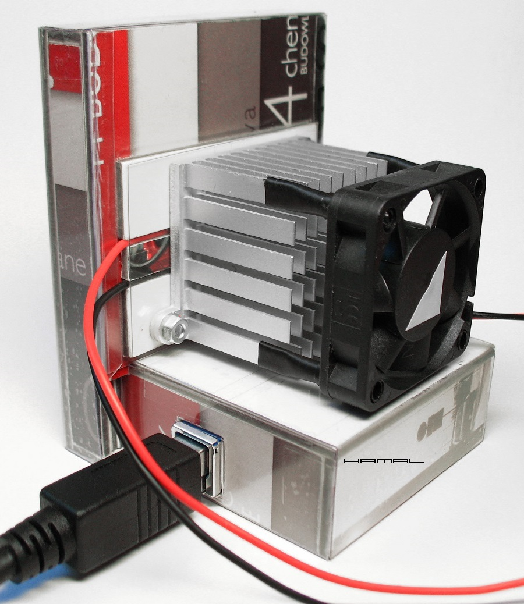
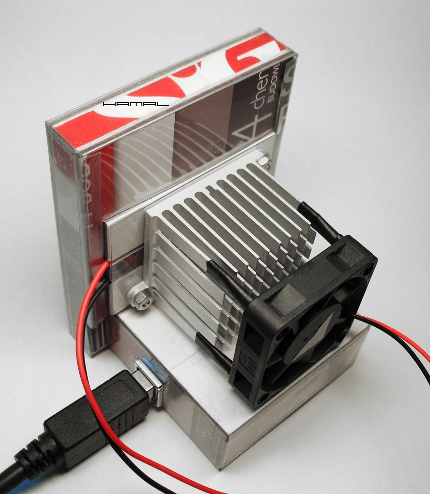
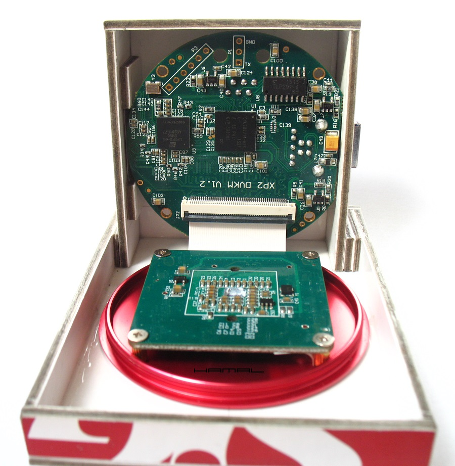
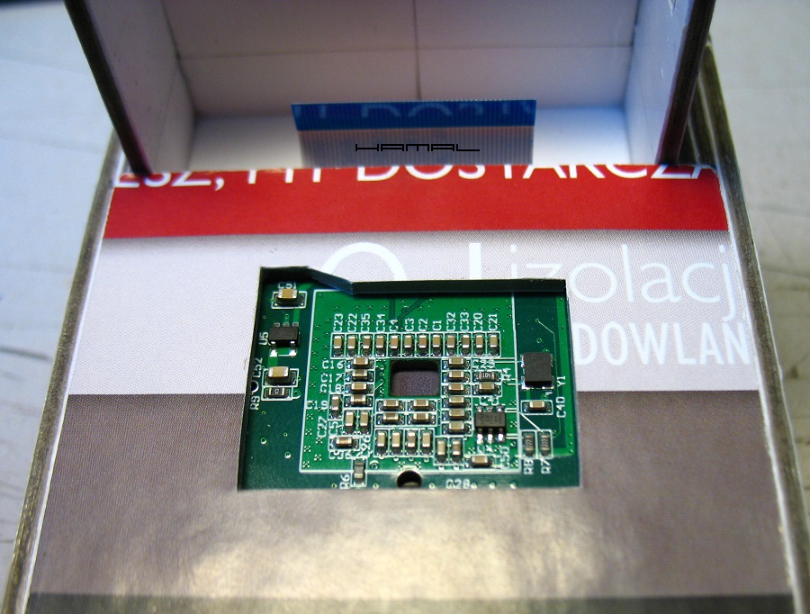

.
MODYFIKACJE
|
ZWO ASI 224 MC posiada bardzo niski poziom szumu, jednak niestety również tragiczny amp-glow, producent się nie postarał, aby powalczyć o jej użyteczność, postanowiłem więc przerobić ją na wersję chłodzoną, zmniejszając tym skalę niepożądanego zjawiska. Aby istniała możliwość przerobienia kamerki na wersję chłodzoną, na płytce elektroniki musi być dostęp do tylnej ścianki matrycy, pozostaje więc zrobić nam to, czego nikt z nowo zakupionym sprzętem robić nie lubi, mianowicie rozłożyć go na części :D Otwarta kamerka ZWO ASI 224MC .  Po rozłożeniu kamerki z ulgą stwierdzamy, iż płytka elektroniki matrycy posiada pod sensorem otworek (4,6 mm x 3,8 mm), dostęp do tyłu matrycy jest, ale... niestety, tuż pod pierwszą płytką z elektroniką jest kolejna płytka, która zasłania nam bolec obudowy i uniemożliwi dokonanie przeróbki wzorem ZWO ASI 120MM. Wnętrze ZWO ASI 224MC - płytki elektroniki .  Wnętrze ZWO ASI 224MC - otwór za matrycą .  Wnętrze ZWO ASI 224MC - tył dolnej płytki. Uzyskanie tego etapu wymagało odlutowania gniazda ST4 autoguidingu !! .  MODYFIKACJA | ZWO ASI 224MC ( Mod-Mark I ) Po rozważeniu wszelkich możliwości doszedłem do wniosku, że jedynym słusznym krokiem dalszego usprawnienia tej kamerki będzie jej całościowa modyfikacja, polegająca, na osadzeniu elektroniki w nowej obudowie. Do tego celu, należało wszystko wydobyć z oryginalnej puszki i umieścić w nowym miejscu umożliwiającym spełnienie wymaganych celów. Do chłodzenia postanowiłem zastosować Ogniwo Peltiera TEC1-00703, gdyż nie chciałem zbyt dużej mocy, ani uzyskiwania radykalnego spadku temperatury (praca w okolicach punktu rosy) z uwagi na chęć potestowania pasywno/aktywnego sposobu odprowadzania ciepła. Do termicznego połączenia ze sobą widocznego w otworze płytki tyłu matrycy i Ogniwa Peltiera wykonałem stosowną kostkę. Otwór w płytce posiada wymiary 4,6mm na 3,8mm a ogniwo wymiary 10mm na 10mm, należało więc wykonać element w formie piramidki, aby zespolić ze sobą termicznie te dwa różne elementy. Na zdjęciu poniżej widzimy rzeczoną kostkę umieszczoną w otworze płytki sensora, celem kontroli, czy zachowuje stosowny dystans od elementów elektroniki płytki. ASI224MC - kostka łącząca moduł peltiera i tył chłodzonej matrycy.  Obudowa kamerki została wykonana z bardzo twardego kartonu, o grubości 2,5 mm, klejonego za pomocą kleju Super Glue, co przy umiejętnym wykorzystaniu tej techniki, daje konstrukcje o sztywności równoważnej plastikowi. Całość, dla zabezpieczenia przed wilgocią, została ubrana w jednoczęściową (na zasadzie siatki bryły) powłokę, z odpornej na ścieranie i załamania pleksi, o grubości 0,3 mm, pozyskanej z opakowania odzieżowego. Po roku użytkowania, na mrozie i rosie, obudowa nadal spisuje się doskonale i nie ustępuje niczym swoim fabrycznym odpowiednikom. Poniżej zdjęcia tej nietypowej konstrukcji :) HAMAL|ASI224MC|Mk1  HAMAL|ASI224MC|Mk1  HAMAL|ASI224MC|Mk1  Poniżej, szczegóły budowy wewnętrznej. HAMAL|ASI224MC|Mk1  HAMAL|ASI224MC|Mk1  Spadki temperatur matrycy w porównaniu do fabrycznych modeli pozornie nie były spektakularne, jednak... jak się okazało w świetle nowych ustaleń, w przerobionych przeze mnie kamerkach, spadki temperatury matrycy są znacznie wyższe, niż wynika to z wyświetlanych w programach akwizycyjnych wartości, a to dlatego, iż w tego typu kamerkach pomiaru temperatury matrycy nie dokonuje się w samej matrycy, lecz na płytce elektroniki, z dala od samej matrycy!!! Więc w moim przypadku, gdy matryca jest precyzyjnie chłodzona z pominięciem reszty płytki, wyniki spadku temperatury są mocno zaniżane. Fabryczne modele kamerek z tego właśnie względu posiadają chłodzoną całą płytkę, wraz z czujnikiem temperatury, co dla odmiany sprawia, że wyniki pomiarów spadku temperatury sensora są zawyżane !! WIĘCEJ Bardziej szczegółowe rozważania na temat samych Modułów-Ogniw Peltiera TUTAJ. 
|